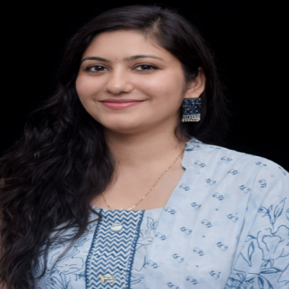

Ram Lal Anand College

Ram Lal Anand College, University of Delhi, New Delhi

011-2411257


 Download CV
Download CV
Administrative Assignments
● Member, NIRF (2025) Committee - Preparation & Documentation, 2024
● Co-Convener, College Website Committee, 2023-2026
● Convener, SC/ST/OBC/EWS/PwD Committee, Admission Cell, 2023-2024
● Nodal Officer, Dark Patterns Buster Hackathon (DPBH-2023), 2024
● SPOC, Kavach Hackathon 2023
● Member, Admission Committee & Counselling Committee, 2023-2024
Areas of Interest / Specialization
● Digital Forensics
● Cyber Security
● IoT Forensics
● Blockchain
Subjects Taught
● Computer System Architecture
● Mathematics for Computing
● Artificial Intelligence
● Blockchain
● Cyber Security
● Python Programming
Publications Profile
Principal Investigator: Cyber Forensic Framework for User-Centric Human Threat Intelligence
Analysis.
● Forensic analysis of hidden artifacts (2023)
● Blockchain-based digital chain of custody (2023)
● Enhancing Digital Investigation using ChatGPT (2023)
Other Activities / FDP
● Organized Cyber Safety Workshop
● Faculty Induction Programme Completed
● FDP on Blockchain Assisted Federated ML